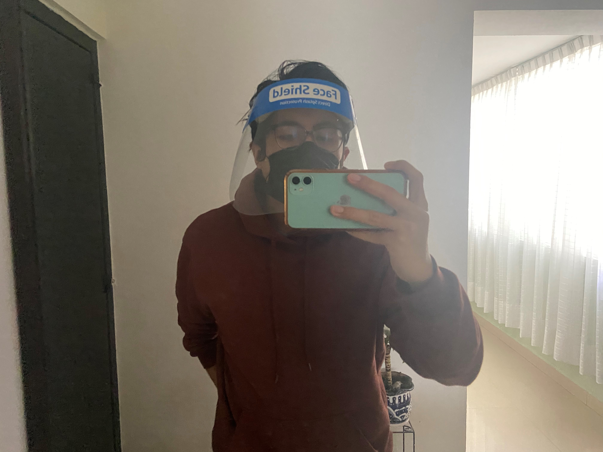
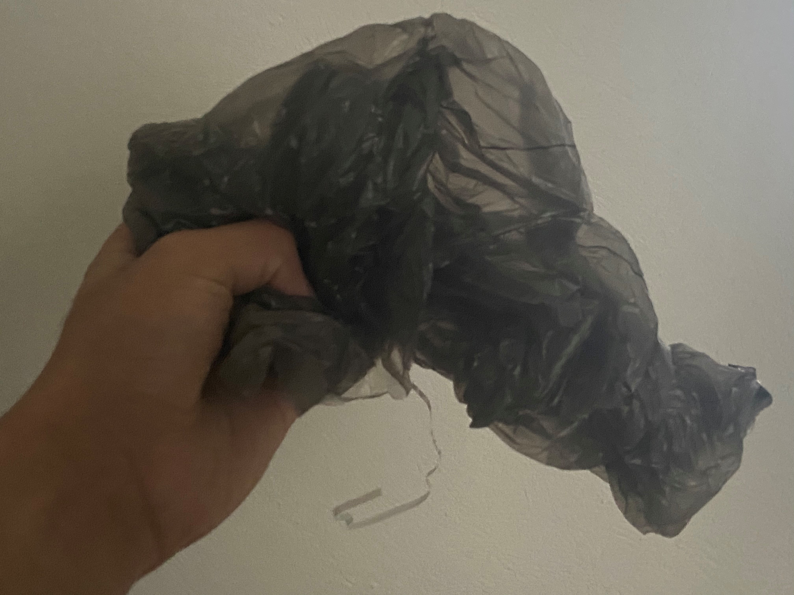
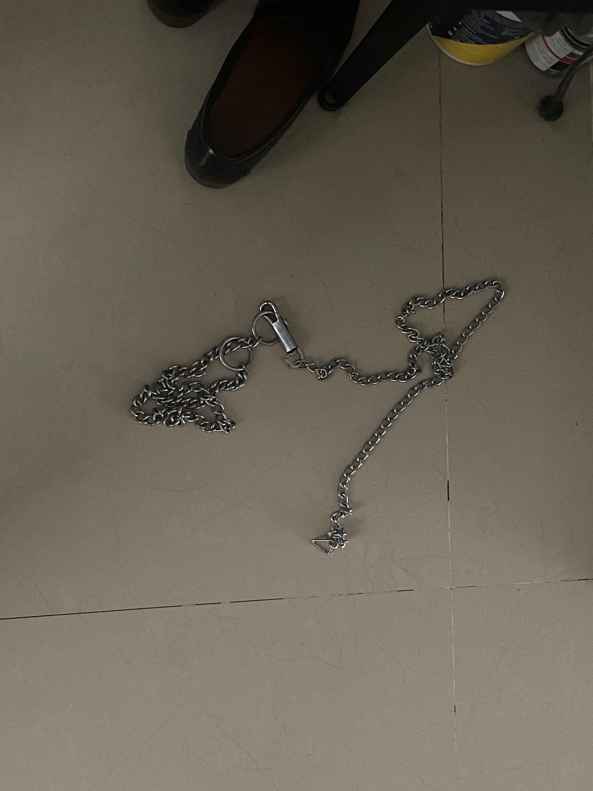
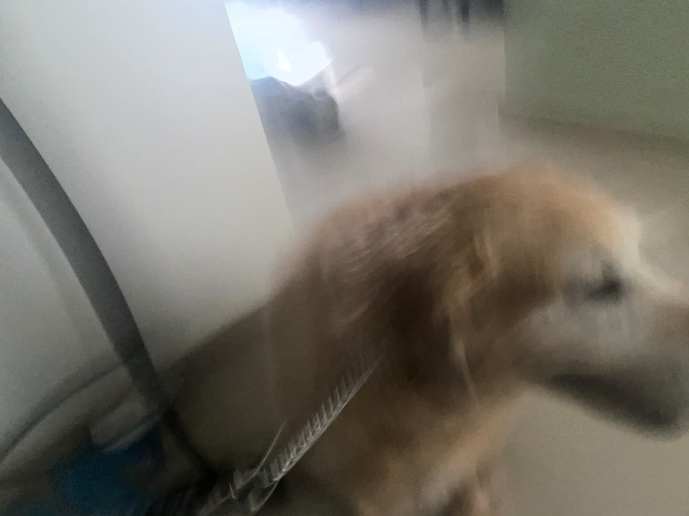
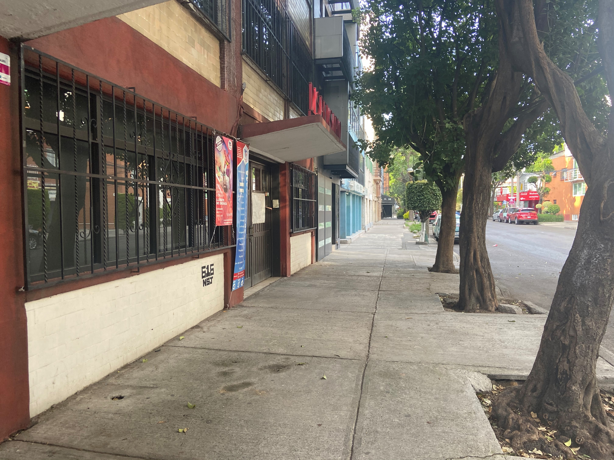
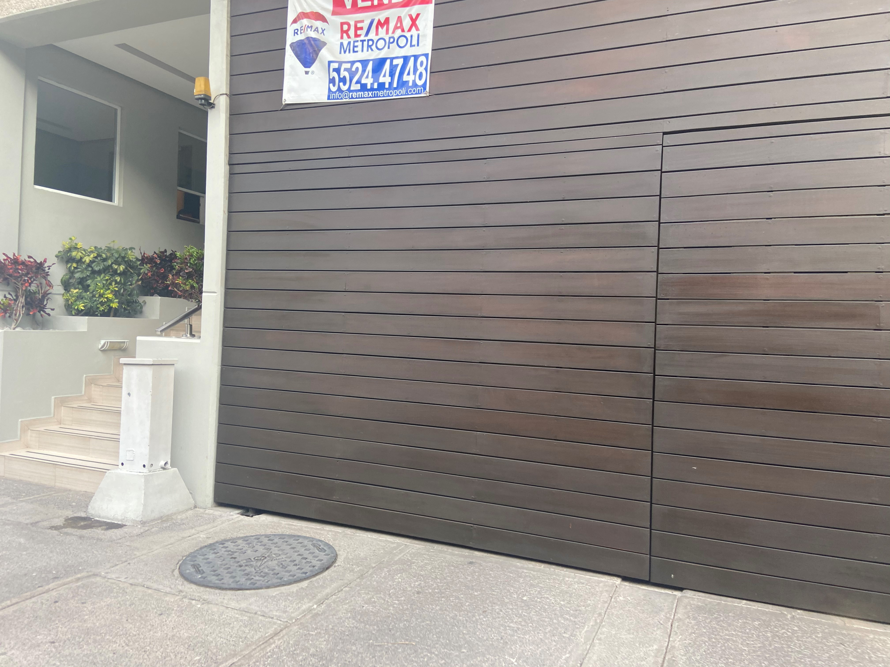

Contesta en la página html/css: ¿Cuál es tu motivación de hacer la actividad?
Durante estos tiempos donde no podemos salir a lugares con mucha gente, me ayuda a despegar la mente un poco y sentir el sol un ratito. Sin embargo, en condiciones normales lo haría para que mi perrita hiciera sus necesidades y también pudiera caminar un poco fuera del departamento.
¿Cómo realizas esa actividad normalmente? Describe los pasos
Actividad: Sacar a mi perro a pasear tres veces al día
- (En condiciones de coronavirus) Me pongo cubrebocas y careta para salir 
- Agarro una bolsa 
- Agarro la cadena de Nina (mi perrita) 
- Se la pongo 
- Abro la puerta y salimos
- Cierro la puerta con seguro
- Salgo de la entrada del edificio
- Cruzamos la calle 
- Damos unas cuantas vueltas hasta que hace sus necesidades
- Si hace utilizo la bolsa para recoger sus necesidades
- Regresamos al edificio 
- Tiro la bolsa
- Entramos al departamento
- Le quito su cadena
- Me lavo las manos
- Me quito mi cubrebocas y careta (en tiempos de coronavirus)
- Todo esto lo repito tres veces al día

¿Cómo te gustaría realizar esa actividad?
De la misma manera que la hago normalmente
¿Sientes que la actividad la realizas diferente ahora que estás siendo observado/a?
No